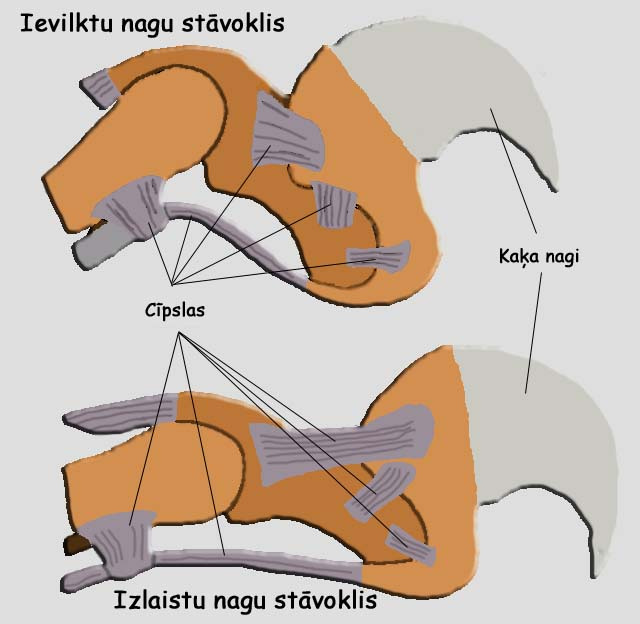

>Nagi
Bieži ir maldīgs priekšstats, ka kaķi nagus ievelk, kad viņam tie nav vajadzīgi, bet īstenībā ir otrādi. Kaķi nagus tieši izlaiž, kad viņiem tos vajag, bet, kad vairs tos nevajag, tie automātiski atkal ielaižas ķepā. Kad kaķi izlaiž nagus, saraujas muskuļi, kuri iztaisno vairākas locītavas. Nagi kaķim kalpo gan medībām, gan cīņām, gan priekšmetu satveršanai. Pirms medījuma nogalināšanas kaķi to pietur ar nagiem, lai tas neaizmuktu. Nagi kalpo arī, lai cieši noturētos, piemēram, pie koka. Visiem šiem nolūkiem kaķa nagiem ir jābūt asiem. Kaķi regulāri asina nagus, lai atbrīvotos no to vecās daļas. Brīvā dabā šim nolūkam kaķi parasti izmanto kokus, bet mājas kaķi var radīt problēmas, asinot nagus tam nepiemērotās vietās (piemēram, pret mēbelēm vai tapetēm). Lai izvairītos no šīs problēmas, kaķim var iemācīt nagu asināšanai izmantot īpašu dēlīti, ko saimnieks var izgatavot pats vai iegādāties zooveikalā. Daži saimnieki izvēlas sava kaķa nagus apgriezt, tomēr šiem kaķiem ir grūti pielāgoties apkārtējai videi, ja tie nokļūst uz ielas.[nepieciešama atsauce] ASV ir pieņemts kaķiem nagus izoperēt, amputējot katra pirksta pēdējo falangu visām četrām ķepām. Tā ir sāpīga un smaga operācija. Dzīvniekaizsardzības organizācijas aktīvi cīnas pret šo metodi un 2009 Ziemeļu Kalifornijā izdevās panākt tās aizliegšanu. Lielākajā Eiropas valstu daļā šāda procedūra ir aizliegta
